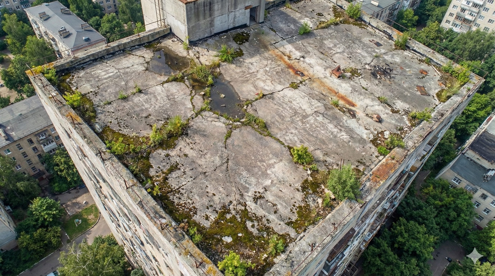
STEP 01
施工前現況防護
進場前進行完整動線規劃與防護措施，確保施工安全與環境整潔。
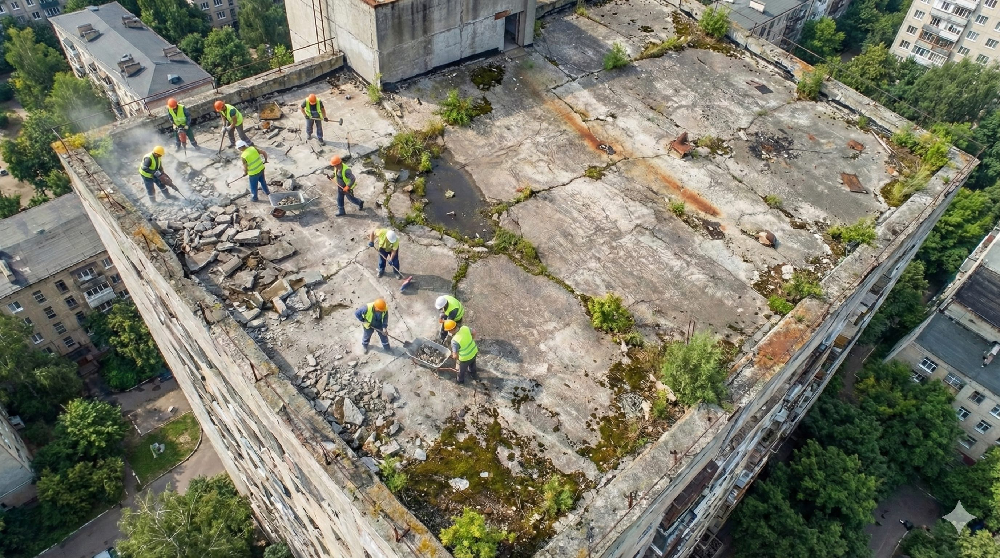
STEP 02
重型機具吊掛
使用專業吊車將破碎機具安全吊掛至頂樓作業區。
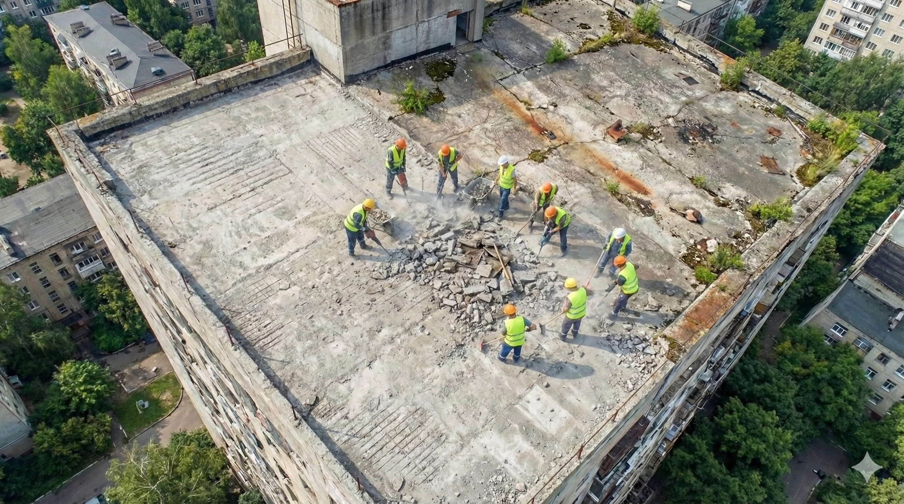
STEP 03
地面結構破碎
針對老化防水層與結構層進行全面性破碎打除。

STEP 04
舊防水層刨除
徹底移除舊有失效之防水層，直達結構體。
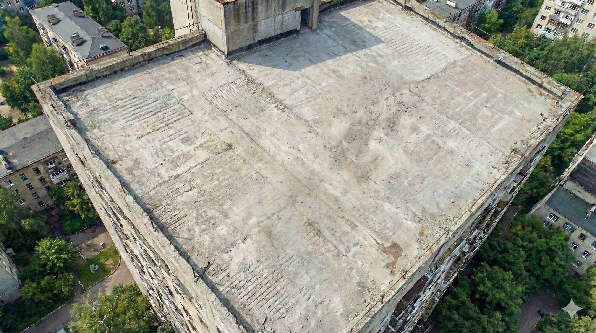
STEP 05
角隅細部打除
針對女兒牆角隅與落水頭周邊進行精細打除。
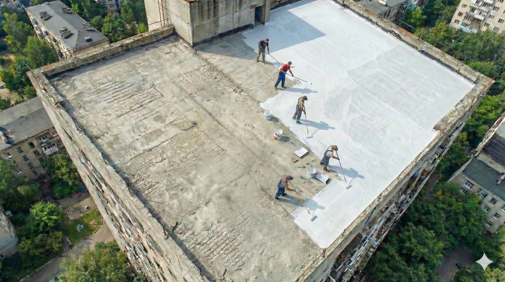
STEP 06
廢棄物裝袋
將打除之廢棄土石進行分類裝袋，保持現場整潔。
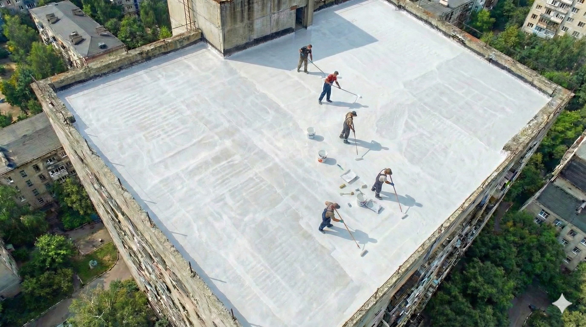
STEP 07
廢料吊掛清運
將裝袋廢料透過吊車運送至地面清運車。
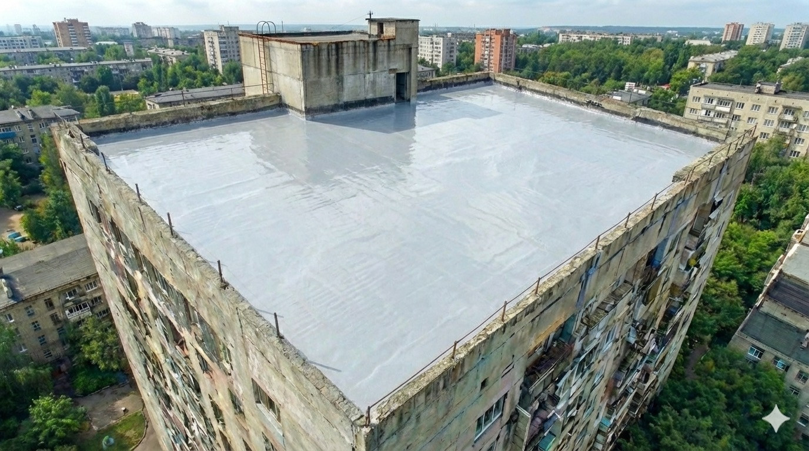
STEP 08
素地研磨 (粗磨)
使用研磨機去除殘留之水泥塊與舊膠，整平地面。
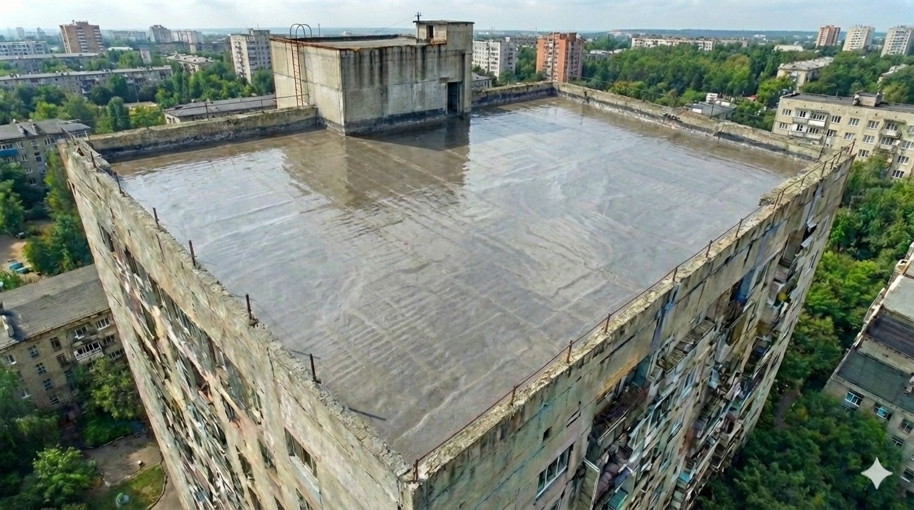
STEP 09
細部修整研磨
針對不平整處進行二次精細研磨。
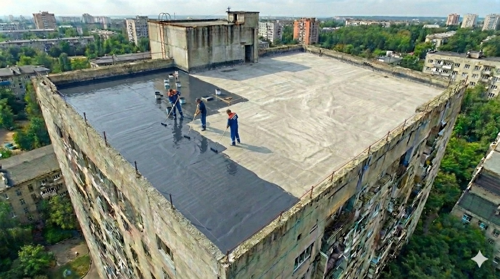
STEP 10
結構裂縫檢視
地面淨空後，進行結構裂縫之全面檢查與標記。
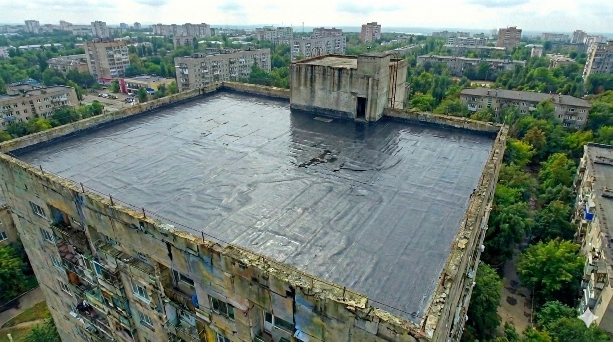
STEP 11
高壓水刀清洗
利用高壓水柱徹底清洗毛細孔內之粉塵與青苔。
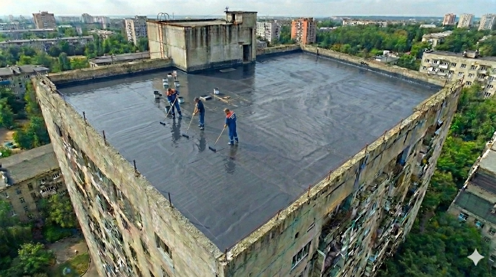
STEP 12
積水與汙泥排除
將清洗後之汙水徹底刮除並吸乾。
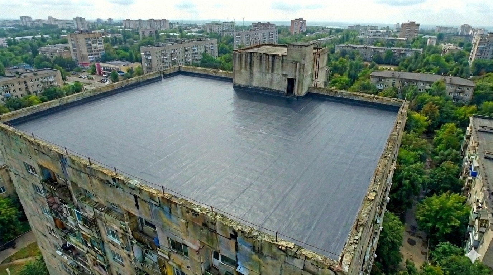
STEP 13
完工素地呈現
呈現乾淨、乾燥且堅實之結構素地，利於防水材附著。
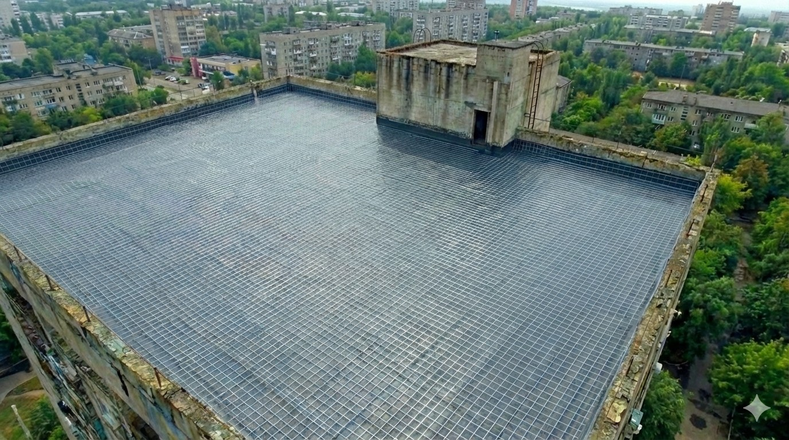
STEP 14
排水系統檢查
確認落水頭暢通無阻塞，並安裝保護蓋。
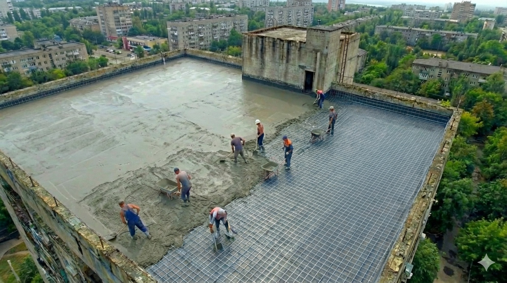
STEP 15
坑洞修補 (若有)
使用高強度結構修補砂漿填補地面凹洞。
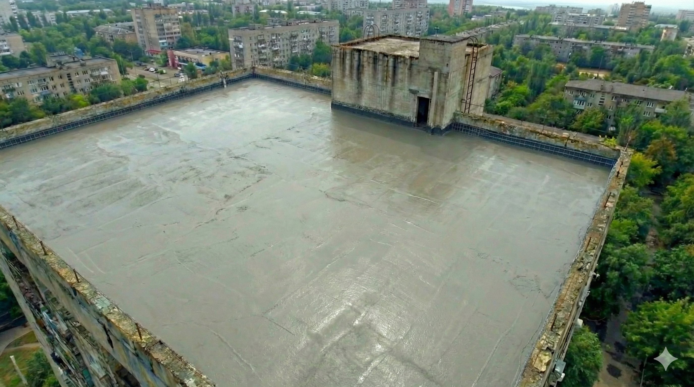
STEP 16
完工全景
屋頂打除工程圓滿完成，準備進入防水施作階段。
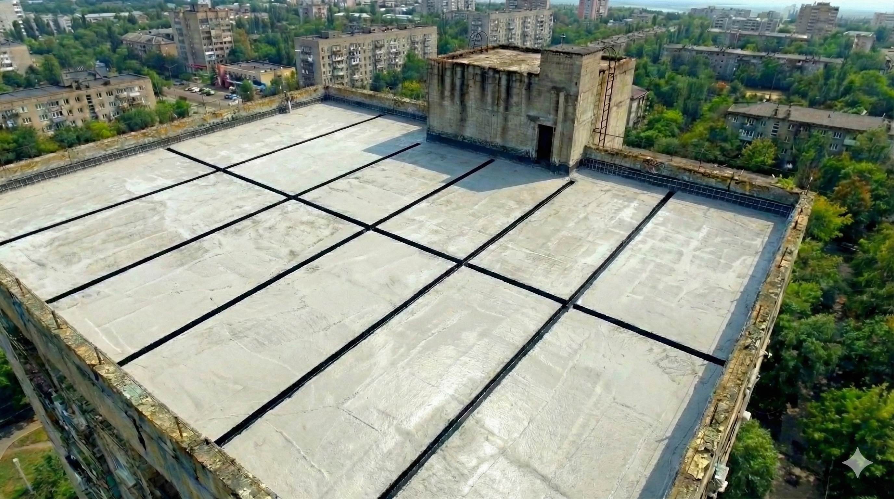
STEP 17
昱揚工程專業團隊
感謝您的信任，昱揚工程始終堅持最高品質。